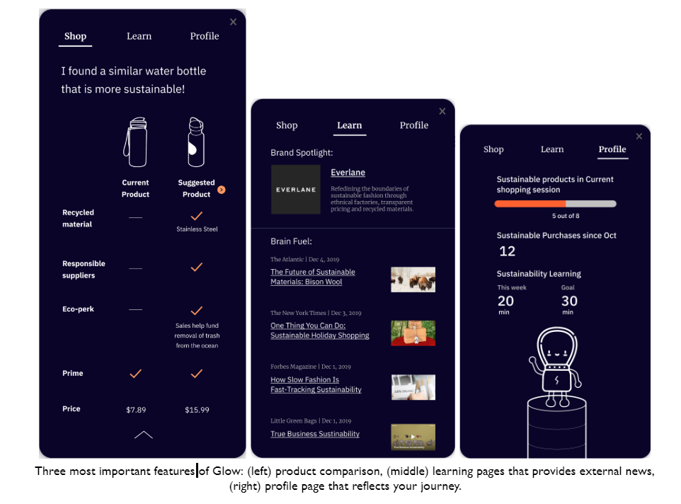

About Me
I'm Ricky Ma! Twenty years old and still a little weirded out by that.
I'm a current Information Systems student at Carnegie Mellon University, pursuing minors in Human-Computer Interaction and Computer Science.
I really like developing software, and hope to participate in something that can make a tangible impact for social good.
Here are some of the projects I've worked on in the past years:
| Class / Event |
Project |
Description |
67250
The Information Systems Milleux |
Web Development Project |
Created a website using vanilla HTML, CSS, and Javascript that showed the details of a bakery's assorted goods, and options for ordering.
Here is a link to the project. |
Capital One Software Engineering Summit
Hackathon |
UtiliTrend |
Created a webapp that would show people what their estimated utility costs would be based on what people in the area are paying.
It shows the average rates people are paying in a certain zip code based on Zillow API data and bank account information, then displays it in a chart.
Here is a link to the GitHub repository with the project. |
15112
Fundamentals of Programming |
Term Project |
Greated a graphical user interface and an interactive rhythm game where you can create your own beatmaps to play. This was the final
porject that was given in the class to show what types of things I learned. Here is a demonstration video of the project. |
05499
Persuasive Design |
Final Project Glow |
Worked in a team to design a chrome extension that would prompt users to choose more sustainable options, theoretically using some algorithm to determine similar products to the one users are currently looking at. Screenshots of examples of how the extension would look are below. |
70311
Organizational Behavior |
Final Project Business Analysis |
Worked in a team to analyze an organization's strengths and weaknesses, and how it can use organizational behavior theories or motivation to improve the motivations of its memebers to participate in the organization more. |
Capital One Software Engineering Summit
Coding Challenge |
Jeopardy Search Engine |
Created a webapp that would show people what their estimated utility costs would be based on what people in the area are paying.
It shows the average rates people are paying in a certain zip code based on Zillow API data and bank account information, then displays it in a chart.
Here is a link to the GitHub repository and the GitHub Pages website with the project. |
Screenshots of what Glow looks like in its final prototype:

Courses Taken
- 15122 - Prinicples of Imperative Computation - Spring 2019
-
Learned about fundamentals of imperative computation: ensuring the correctness of programs, data structures in imperative computation, and memory management in C. Course site is available here.
- 15112 - Fundamentals of Programming - Fall 2018
-
A technical introduction to the fundamentals of programming with an emphasis on producing clear, robust, and reasonably efficient code using top-down design, informal analysis, and effective testing and debugging. Course site is here.
- 15150 - Principles of Functional Programming - Spring 2020
-
The purpose of this course is to introduce the theory and practice of functional programming. Course site is available here.
- 67262 - Database Design and Development - Fall 2019
-
Learned about the fundamentals of database design. SQL querying, normalization, and an introduction to document models in MongoDB, and key-value dbs in Redis.
- 67272 - Application Design and Development - Spring 2020
-
This course provides students with the concepts and techniques to design and develop software applications, and to understand the design process. Students will learn the importance of user-centered design and will develop a prototype of a web application as a course project. Course site is here.
- 67240 - Mobile Web Design and Development - Spring 2020
-
This course teaches the fundamentals of designing websites and creating them, especially for mobile devices.
- 05391 - Designing Human Centered Software
-
This course teaches the iterative process of creating software to best serve human needs.
- 05392 - Interaction Design Overview
-
This course teaches the fundamentals of interaction design: doing user research, iterating through prototypes, and fundamental design principles.
- 67250 - Information Systems Milleux - Spring 2019
-
Recieved an introcution to technology in business, database design, and front-end web development.
- 05499 - Persuasive Design
-
Learned about how to design something to communicate a persuasive intent in an ethical manner.
- 70311 - Organizational Behavior
-
This course teaches the fundamentals of how people behave in organizations (e.g. motivating factors, emotions, communication. culture).
- 17214 - Principles of Software Construction: Objects, Design, and Concurrency - Fall 2019
-
Learned about how to design software to make it robust and extensible, core concepts of how to use objects and write code that is readable, functional, and workable. Course site is available here.